A 2-D diffusion eigenproblem with a two-parameter coefficient
This page treats scalar diffusion on the unit square whose matrix-valued coefficient depends on two scalar parameters, \mu = (\mu_1, \mu_2) \in [0.8, 1.05]^2. The spatial problem is two-dimensional; the parameter box it is swept over is also two-dimensional. It is the companion to the one-parameter sweep, with the same PDE generalized to a 2-D parameter box.
The page is built in the same order as the one-parameter page. First the shared groundwork: the model, the discretisation, and the two qualitatively different features that drive refinement. Then each of the two operating modes gets a full, self-contained treatment: Window mode — the operating mode closest to the reference setup — followed by FirstK mode — a fixed-band approximation. Both runs use the node-centric forward_points refinement — the dissertation’s own refinement rule (DIR-097) — so, like the MATLAB, they fill the 2-D interior. The page closes with a side-by-side comparison of the two and a reachability analysis of why the alternative edge-bisection rule cannot reach that interior fill (DIR-096) and how the admissible variant (DIR-105) fills it without the MATLAB’s virtual points.
Related pages
- One-parameter sweep — the reference 1-D benchmark and the worked single-edge matching example.
- Tolerance perturbation — evidence that the tolerance values used here are load-bearing.
- Knob sweep — how the grid responds as the verdict thresholds move.
Why this example
The one-parameter case is the smallest problem that exposes the core difficulty — eigenvalue branches that approach and exchange character — in a setting dense enough to verify against ground truth. This two-parameter case answers the next question: does the same algorithm generalise to a higher-dimensional parameter box? The answer here is yes, and the extension requires no new ideas — the graph now has edges in two axis-aligned directions instead of one, and the same edge-by-edge matching and certification logic applies unchanged.
What the 2-D box adds is variety: two qualitatively different refinement drivers appear on the same run.
- A crossing (bands 3–4, left half of the box). The a-posteriori verifier detects the crossing at level 0 without needing to bisect through it — the cluster verdict certifies those edges directly. This is the easier case.
- A small-gap pair (bands 4–7, right half of the box). A sustained near-degeneracy over an extended region drives most of the L \geq 1 refinement and produces the asymmetric node concentration visible in the grid plots. This is the harder case — the gap never closes, so the verifier must accumulate enough nodes to resolve it.
The 2-D run also raises the propagation-order question: for d_{\text{param}} \geq 2 there is more than one admissible order to walk the initial seed lattice when propagating the band-matching identity from the anchor point outward. The initial-lattice section below shows the seed graph and three representative shortest paths.
The model
Find (\lambda, u) such that -\nabla\cdot\bigl(c(\mu)\nabla u\bigr) = \lambda\, u on \Omega = [0,1]^2 with u = 0 on \partial\Omega, where
c(\mu_1, \mu_2) = \begin{bmatrix} \mu_1^{-2} & 0.8\,\mu_2^{-1} \\ 0.8\,\mu_2^{-1} & \mu_2^{-2} \end{bmatrix}, \qquad \mu \in M = [0.8,\,1.05]^2.
The weak form is affine in the entries of c, so the stiffness matrix decomposes into fixed tensor-component matrices assembled once — the same affine structure used on the one-parameter page; only the coefficient and the parameter box change. Every parameter point costs four cached component contractions plus one eigensolve — no re-meshing, no per-\mu quadrature.
Discretisation
Both runs share the same spatial discretisation and parameter domain; only the spectral bookkeeping differs between modes.
| Quantity | Value | Role |
|---|---|---|
| Mesh | \texttt{mesh\_n} = 64, P1 triangulation | spatial discretisation |
| Parameter box | [0.8,\, 1.05]^2 | parameter domain |
| Initial grid | 3\times3 lattice (9 nodes, 12 axis-aligned edges) | seed |
| Max refinement levels | 8 (both runs terminate before this) | iteration cap |
The two operating modes split here:
- Window mode keeps whichever eigenvalues fall inside a fixed spectral window I_\lambda = [0, 200], so per-node rank is ragged (varies across the parameter box as bands enter and leave the window). This is how the reference 2-D example was actually computed.
- FirstK mode keeps a fixed number n_{\text{eigs}} = 20 of the smallest bands at every node. This is the rebuild’s fixed-band approximation.
Each mode is treated in full below, on its own honest tolerances, before they are compared.
Reference eigenvalue surfaces
The dense reference sweep is a 65\times 65 Cartesian grid over M, using n_{\text{eigs}} = 20 to cover the full window [0, 200]. The first eight eigenvalue surfaces are stacked in a single 3-D view so the full spectrum’s shape — and the crossings and small-gap regions that drive refinement — are visible at a glance.
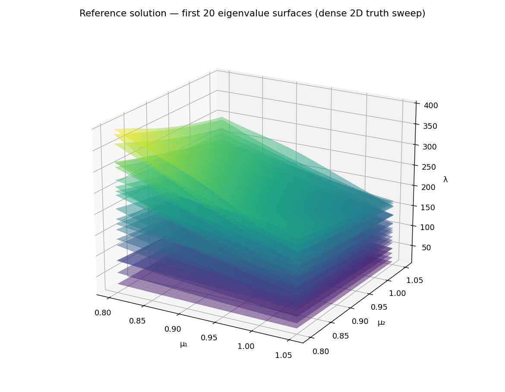
The stacked view shows what is there; the next two surface views isolate the two specific features that drive refinement.
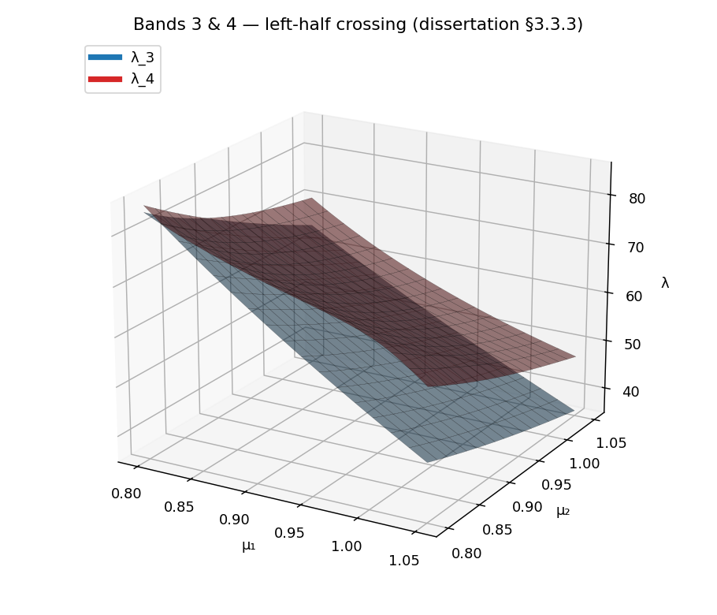
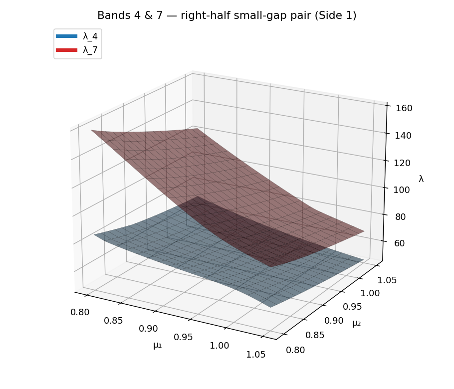
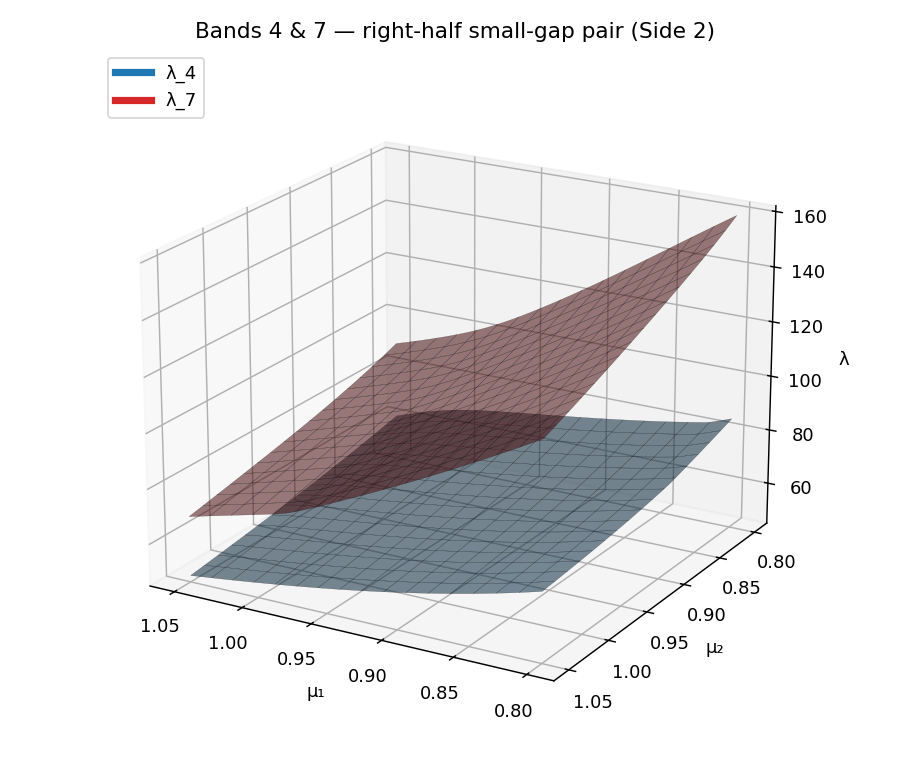
Propagation path on the initial lattice
For d_{\text{param}} \geq 2 the matching propagation has more than one admissible order to walk the initial grid. One way to picture the choice is a minimum spanning tree over the initial 3\times3 lattice with three shortest paths from (0.8, 0.8) to (0.8, 1.05), (0.925, 1.05), and (1.05, 1.05) overlaid. The refinement loop propagates matching directly along the graph edges without an explicit spanning-tree construction, so the figure below is a reference visual built on the same 9-node lattice.
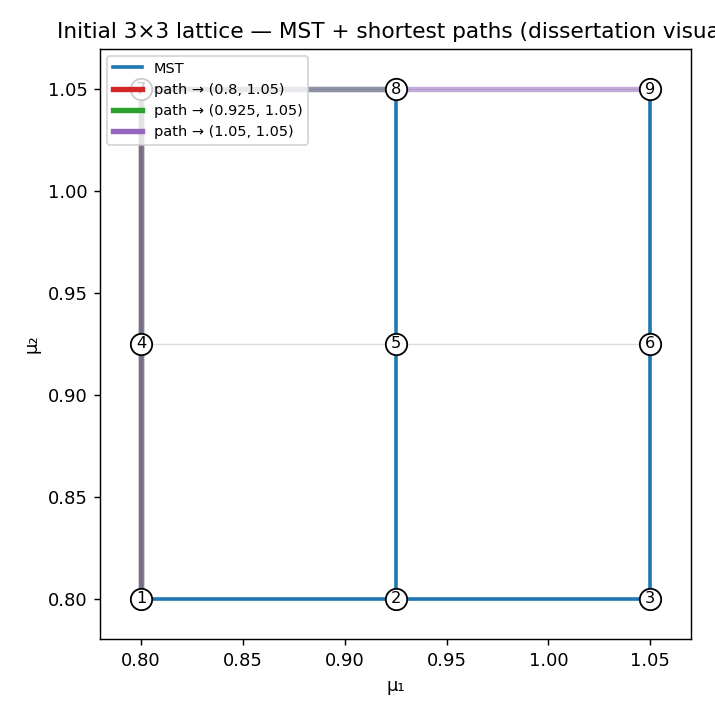
Window mode — the reference operating mode
The §3.3.3 example was computed in window mode (CodeSeptember condition=Inf, r=[0,200]), so this is the run that most closely mirrors the reference operating mode — though it does not reproduce the reference grid, which fills the 2-D interior in a way the default refinement structurally cannot (see Reachability & interior fill below). Snapshots are ragged: each parameter point keeps whatever eigenpairs fall inside the fixed window
I_\lambda = [0,\, 200]
(matching the MATLAB r=[0,200] / CodeSeptember condition=Inf). The verdicts use the one a-posteriori (Hungarian) path with anchored-absolute pruning at (t_\pi = 0.57,\,
t_\lambda = 0.015) — the §3.3.3 stated values. A surplus band that merely enters or leaves the window between adjacent nodes is certified by the row-\ell_2-norm test (Algorithm 6) rather than forcing refinement.
Threshold provenance note. The reference’s §3.3.3 prose states t_\lambda = 0.015; both MATLAB sources (CodeSeptember Main.m and ExampleAug2124NoVirt.m) use t_\lambda = 0.085 for the 2-D case. The window run here uses the prose value; see the one-parameter page for the analogous provenance discussion in the 1-D case.
Adaptive grid evolution
One panel per refinement level. Nodes are coloured by insertion level; surviving edges shown as grey lines. As the iteration proceeds, new nodes concentrate in the right half of the box — driven by the small-gap pair above.
Drag the slider (or use ←/→ when focused) to step through the levels. L = 0 is the 3\times3 lattice seed.
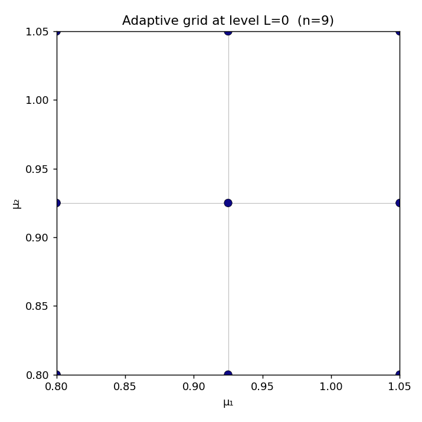
A-posteriori certification map
Each panel shows the edges tested during refinement level L, coloured by their dominant a-posteriori verdict: green = CERTIFIED, red = REFINE, orange = CLUSTER. Grey edges are certified edges from earlier levels shown for spatial context.
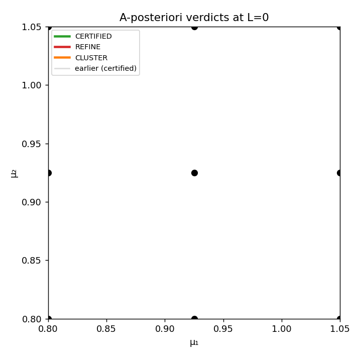
Verdict map
Initial seed-grid edges coloured by the dominant a-posteriori verdict. Green = certified, red = refine, orange = cluster.

Error table
The run, level by level — the reference Table 3.2. There is no n_{\text{wrong\_match}} column: Window mode’s ragged ranks have no fixed band index to compare pipeline labels against a fixed-band truth sweep.
| Level | n_{\text{points}} | n_{\text{subintervals}} | n_{\text{uncertified}} |
|---|---|---|---|
| 0 | 9 | 12 | 12 |
| 1 | 20 | 22 | 18 |
| 2 | 33 | 26 | 17 |
| 3 | 48 | 30 | 10 |
| 4 | 52 | 8 | 1 |
| 5 | 53 | 2 | 0 |
(Values from the rebuild’s window/error_table.csv.)
Parity gap vs reference Table 3.2. The reference reports the Window run terminating at L=6 with 64 nodes and the per-level counts (n_{\text{points}}, n_{\text{subintervals}}, n_{\text{uncertified}}) = (9,12,4),
(13,10,9), (22,22,11), (36,36,10), (49,39,4), (59,34,2), (64,20,0). The rebuild converges one level earlier (L=5, 66 nodes, node-centric forward_points). The per-level node counts also diverge from L=1 onward. This is the same Hypothesis D parity gap documented for §3.3.3 in DIR-026: the rebuild’s verdict pipeline and the reference MATLAB publishing driver produce different per-level refinement decisions even when the tolerance values match. The rebuild’s Window run does correctly certify the grid to zero uncertified edges — the algorithm terminates validly, just on a different node distribution.
Summary. Window mode is the closest rebuild reproduction of the reference §3.3.3 spectral window, using the same tolerance values (t_\pi=0.57,\, t_\lambda=0.015) and the same I_\lambda=[0,200] window. The rebuild certifies the 2-D parameter box at L=5 (66 nodes) vs the reference L=6 (64 nodes), a known parity difference.
FirstK mode — the fixed-band approximation
The same problem, with different spectral bookkeeping: keep a fixed n_{\text{eigs}} = 20 smallest bands at every node, regardless of where the spectrum sits. Twenty bands is enough to span the [0, 200] window at every \mu, which makes this a clean fixed-band counterpart to the ragged window run. It is a deliberately chosen comparison count — the generic fixed-band preset keeps far fewer bands — picked so the two modes cover the same spectral region.
| Quantity | Value | Role |
|---|---|---|
| Eigenvalues per point | n_{\text{eigs}} = 20 | fixed band count (chosen to span [0,200]) |
| Pruning threshold | t_\pi = 0.57 | relative cutoff for off-pair projection mass |
| Eigenvalue cluster threshold | t_\lambda = 0.015 | groups near-degenerate bands |
Adaptive grid evolution
Drag the slider to step through the refinement levels.

Per-level surrogate
As the adaptive grid refines, the band-matched snapshot eigenvalues accumulate at the active nodes. At each level the surrogate is the griddata interpolation of those values onto a 129 \times 129 dense grid.
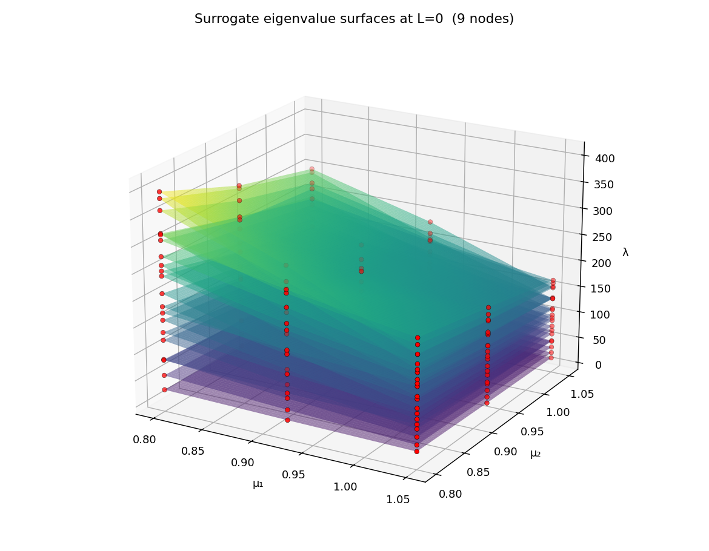
A-posteriori certification map

Verdict map
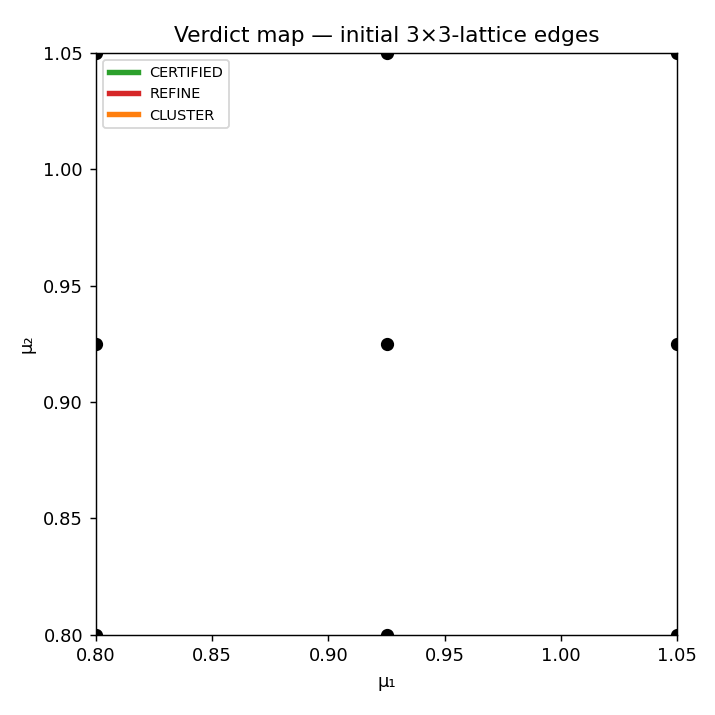
Error table
| Level | n_{\text{points}} | n_{\text{subintervals}} | n_{\text{wrong\_match}} | n_{\text{uncertified}} |
|---|---|---|---|---|
| 0 | 9 | 12 | 8 | 12 |
| 1 | 21 | 24 | 17 | 19 |
| 2 | 40 | 38 | 32 | 17 |
| 3 | 57 | 34 | 46 | 7 |
| 4 | 63 | 12 | 52 | 4 |
| 5 | 67 | 8 | 56 | 0 |
(Values from the rebuild’s firstk/error_table.csv.)
On n_{\text{wrong\_match}}. This column compares the pipeline’s propagated band labels against an independent direct match at the seed midpoint — a strict consistency check. It can be positive even when the grid topology is correct; see the knob-sweep page.
Surrogate eigenvalue surfaces
The algorithm’s output visualised as a surrogate eigenvalue surface per band: scattered-data linear interpolation of the band-matched snapshot eigenvalues onto a dense grid, overlaid with markers at the actual snapshot eigenvalues.
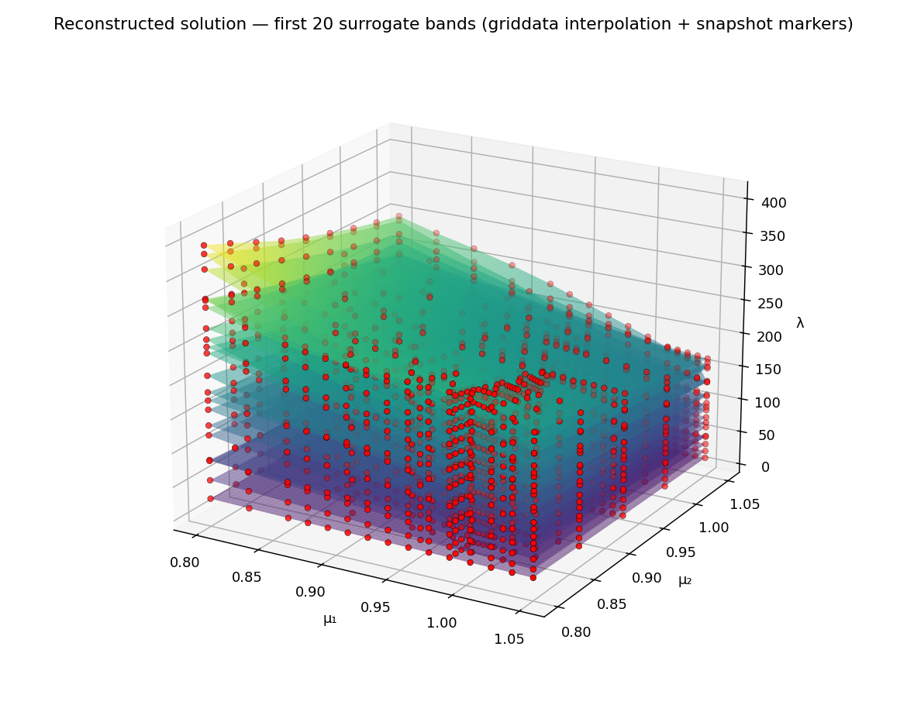
Comparison: Window vs FirstK
The two modes solve the same PDE with different spectral bookkeeping, and they answer different questions:
- Window asks “track every band inside [0, 200]” — this benchmark’s actual question, ragged ranks and all.
- FirstK asks “track the 20 smallest bands everywhere” — a uniform approximation that needs no window.
| Window | FirstK | |
|---|---|---|
| Bands per node | ragged (varies with \mu) | fixed (20) |
| Spectral region | I_\lambda = [0, 200] | 20 smallest bands |
| Tolerances | t_\pi = 0.57,\ t_\lambda = 0.015 | t_\pi = 0.57,\ t_\lambda = 0.015 |
| Terminal level | 5 | 8 |
| Grid nodes | 66 | 121 |
| Reference Table 3.2 (target) | L=6, 64 nodes | — |
Both runs use node-centric forward_points refinement and fill the interior, but on different grids: Window settles at 66 nodes (L=5), FirstK at 121 nodes (L=8). Here — unlike the 1-D example, where a 6-band FirstK cutoff sits below the crossing and under-refines — the 20-band FirstK spans the same [0, 200] window as the ragged run, and under the reference-faithful additive pruning rule it over-refines relative to Window: carrying every one of 20 bands at every node surfaces more marginal off-pair projection mass to flag than the ragged run’s variable, mostly-smaller rank does. Neither run reproduces the reference 64-node L=6 grid exactly — the same Hypothesis D parity difference documented in DIR-026 for §3.3.3: the rebuild and the MATLAB publishing driver produce different per-level refinement decisions at otherwise-matching tolerances.
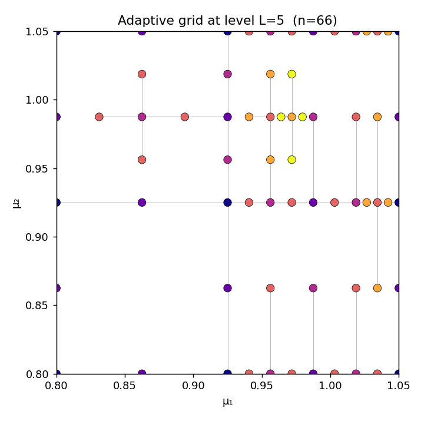
forward_points) — 66 nodes, L=5; interior filled.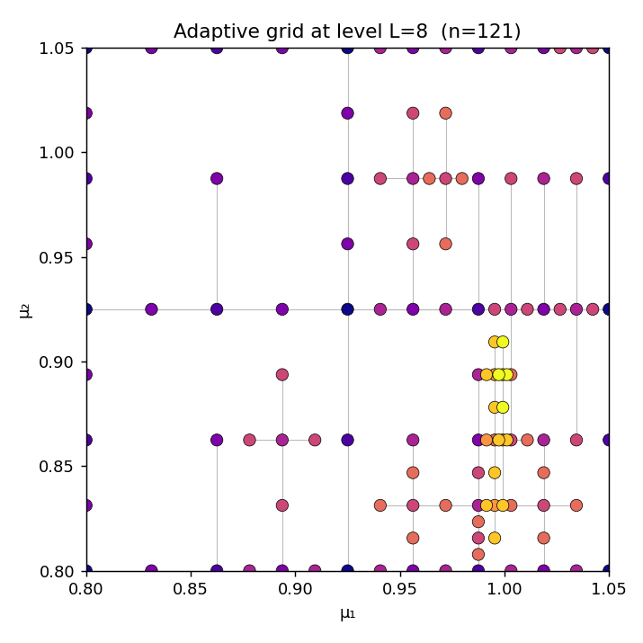
forward_points) — 121 nodes, L=8; interior filled.Reachability & interior fill
The adaptive grids above fill the interior of the four quarters — because this page runs the dissertation’s own node-centric forward_points refinement. That was not true of the rebuild’s original default, edge_bisection, and the reason it failed is structural, deterministic, and worth seeing: it is exactly the reachability gap DIR-096 measured and the motivation for making forward_points the refinement this page renders.
On the 3\times3 seed lattice (\mu \in \{0.8, 0.925, 1.05\}^2) the edge-bisection strategy (refinement_strategy="edge_bisection") inserts each new node at the midpoint of an axis-aligned edge. Every seed edge lies along a grid line, and the midpoint of a segment on a line is still on that line — so the four interior quarters of [0.8, 1.05]^2 can never receive a node. The reference MATLAB avoids this because it refines node-centrically (CodeSeptember/Main.m:329, forward_points): every node spawns forward neighbours in every axis direction, so a node steps off the seed lines and the interior fills in 2-D. This is the “empty quarter” reachability failure written up under DIR-050 (refinement-balance-and-reachability.md). The overlay below shows the gap with the edge-bisection strategy specifically — the trap this page’s forward_points figures escape.
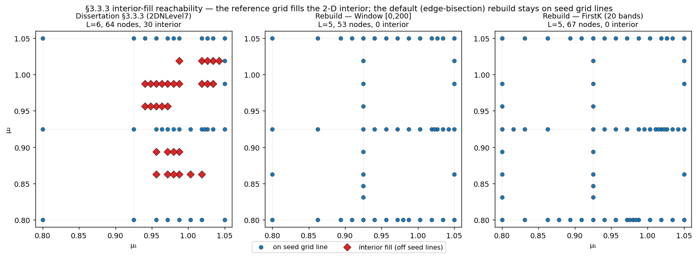
2DNLevel7, 64 nodes) — the 30 nodes that lie off every seed grid line are drawn as red diamonds. Middle/right: the rebuild under the edge_bisection strategy (Window, FirstK-20) — zero interior nodes; every node sits on the boundary or the central cross. This is the strategy this page no longer uses; the forward_points grids above fill the interior. Reference coordinates are extracted directly from the frozen dissertation EPS.Do the rebuild’s node-centric strategies close the gap? (DIR-096)
The rebuild ships two non-default strategies built for exactly this gap — refinement_strategy="hierarchical" (the spawn_hierarchical_child node-centric path) and refinement_topology="smolyak_orthogonal". DIR-096 measured all three against the reference at the real mesh (mesh_n=64), in FirstK and Window modes (scripts/dir_096_reachability_3_3_3.py, artifact tests/artifacts/dir_096/reachability.json). The verdict is a clean negative:
| Strategy | Interior nodes (best) | Terminal | Verdict |
|---|---|---|---|
edge_bisection (old default) |
0 | L=5, 53–67 nodes | Structural trap — stays on seed lines |
hierarchical (1- & 2-sided) |
0 | L=1–5, 12–67 nodes | Behaves like edge-bisection here † |
smolyak_orthogonal |
1 | L=3, 18 nodes | Places one interior node; unusable otherwise ‡ |
| reference target | 30 | L=6, 64 nodes | — |
† The hierarchical strategy’s node-centric reach only helps in an anisotropic pocket (a node with neighbours on one axis but not another — the DIR-066D dead_zone_probe). On the isotropic §3.3.3 seed the flagged edges are seed-lattice edges with same-level brackets, so the strategy falls back to plain bisection and reproduces the trap. Two-sided is byte-identical to edge-bisection here.
‡ smolyak_orthogonal is the only strategy that places any interior node, but it places just one (in the admissible FirstK-5 config). In the FirstK-20 and Window configs it violates the no-hanging-node admissibility invariant; with that guard disabled it fills the interior only by runaway, non-terminating refinement (521 / 232 nodes, 445 / 177 interior at the level cap) — nothing like the reference’s controlled 64-node grid.
Conclusion (DIR-096). No edge-centric rebuild strategy reproduces the reference’s controlled 2-D interior fill. The fill in the MATLAB comes from forward_points’ omnidirectional node-centric spawning combined with an a-posteriori certification that still terminates at 64 nodes; the edge-centric strategies replicate neither the omnidirectional spawn (the hierarchical strategy spawns only along a flagged edge’s own axis) nor a controlled node-centric termination. This is why edge_bisection was not kept as the reproduction: it is an honest but different algorithm from the dissertation’s.
The forward_points port closes the gap — and is now what this page renders (DIR-097)
DIR-097 ports the missing mechanism exactly: refinement_strategy="forward_points" is the MATLAB node-centric driver loop (per-node level vectors, omnidirectional spawn, coordinate dedup, child-active-iff-REFINE through the unchanged one-verdict path). Rerunning the DIR-096 harness with it in the matrix flips the verdict — forward_points is the only strategy that reproduces the interior fill (Window [0,200]: L=5, 88 nodes, 39 interior; FirstK-20: 68 interior; every edge-centric strategy: 0). The faithful-config sweep (scripts/dir_097_faithful_sweep.py) lands closest to the published grid at t_lambda=0.015 (the prose value — the MATLAB source 0.085 terminates far too early), projection=off, InitialLevel=1, packaged as RefinementConfig.dissertation_3_3_3_forward_points_preset(): terminal L=5, 66 nodes, 21 interior vs the reference L=6, 64, 30. The remaining per-level residual (one level early; 21 vs 30 interior) is the flag-count facet of Q11 — the publishing driver is still missing from both MATLAB dumps, so exact Table 2D Error parity remains a stretch goal. Details + measured tables: strategy-comparison §6. The Window and FirstK figures on this page are this forward_points refinement — the dissertation’s own rule — which is why they fill the interior.
But forward_points is not admissible — the Pflüger fix (DIR-105)
forward_points reaches the interior, but on a non-admissible grid: its per-node level-vector spawn drops off-grid-line interior nodes whose coarser bracket-parents are absent — virtual points (a fabricated missing bracket). That is why it must switch off assert_admissible, π⋆, regions, and the parallel pool. DIR-105 ships the third pole that keeps both omnidirectionality and bracket-admissibility: refinement_strategy="admissible_spawn". It spawns the canonical axis_child from each active node’s dyadic index in every axis, and — before adding a child — back-fills that child’s missing bracket-ancestors (the Pflüger downward-closure completion) as real solved support nodes, so no virtual point can arise and Graph.assert_admissible() holds at every level.
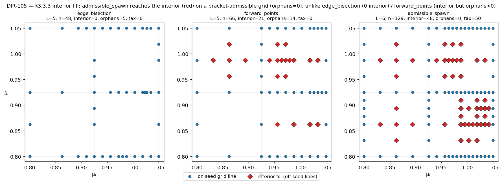
[0,200], mesh_n=64. Interior-fill nodes (off both seed grid lines) are red diamonds. Left edge_bisection: 0 interior — the edge-centric reachability ceiling. Middle forward_points: 21 interior but 14 orphans (non-admissible — the virtual points). Right admissible_spawn: 48 interior with 0 orphans, assert_admissible passing; the admissibility tax (back-filled support solves) is 50, only 4.6 % of the full tensor grid at that depth — sub-tensorial, so the admissible grid is still genuinely sparse.So the interior fill no longer requires the non-admissible n-spawn: it is reachable on a downward-closed grid. The cloud admissible_spawn produces differs from forward_points’ (canonical axis_child vs the per-lineage n), so this route does not reproduce the frozen MATLAB grid node-for-node — it is an admissible fill of the same interior, arguably more correct than the original (whose two extra nodes are the virtual points). Measured tables: strategy-comparison §7; the ε-trap it avoids is written up in matlab-virtual-points.md (DIR-104). Like forward_points, admissible_spawn is opt-in — the figures above render the faithful forward_points refinement, and admissible_spawn is the admissible variant of that same node-centric idea.
Side-by-side with the original MATLAB
The panels below place the Python rebuild next to a freshly generated figure from the dissertation’s own MATLAB code — here the frozen CodeSeptember choice1='1' case, which is the §3.3.3 2-parameter diffusion example, run unchanged. The MATLAB figures are produced headlessly by scripts/matlab_figures.py under MATLAB R2026a and committed as artifacts.
- Source:
GreedyAlgorithm/CodeSeptember/Main.m,choice1='1',InitialLevel=2— the frozen 2-parameter case, faithful with no coefficient adaptation: \Omega=[0.8,1.05]\times[0.9,1.1], coefficient[µ₁⁻²; 0.8·µ₂⁻¹; µ₂⁻²],t_lambda=0.085,t_pi=0.57, window I_\lambda=[0,200]. - Headless-safe patching:
scripts/matlab_figures.pyneutralises the interactive prompts,VideoWriter, and Windows-only.matpaths, and makes the reference-surface plot span the real (rectangular) parameter box — it never edits the frozen dump on disk. The grid-helperslev2knots_doubling/tensor_gridare addpath’d from theCleandump.
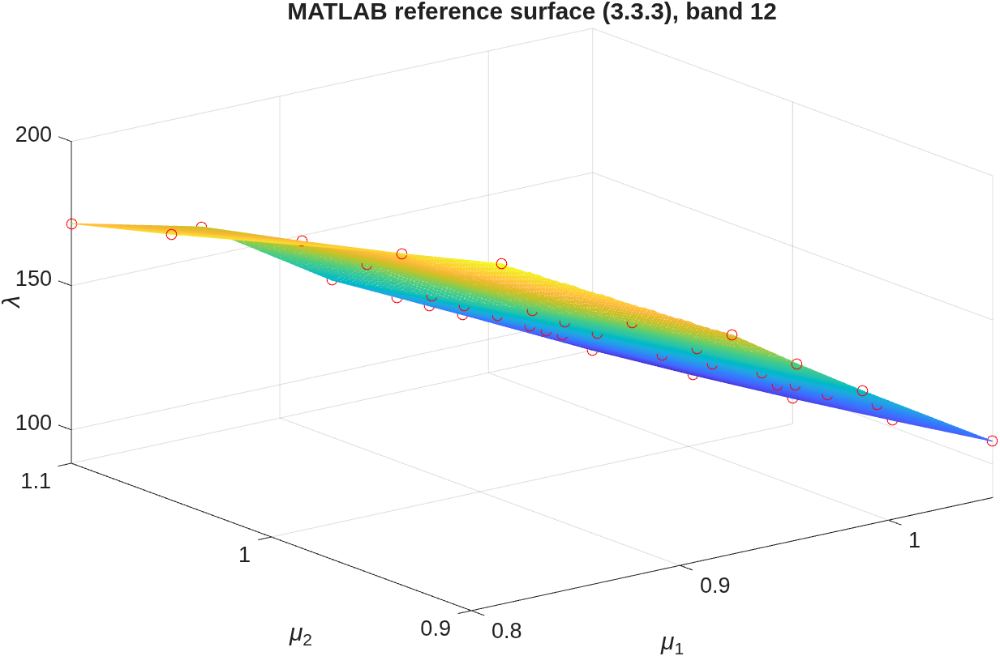
forward_points), 66 nodes, L=5. The interior of the four quarters is populated — the node-centric spawn steps off the seed grid lines, exactly as the MATLAB does.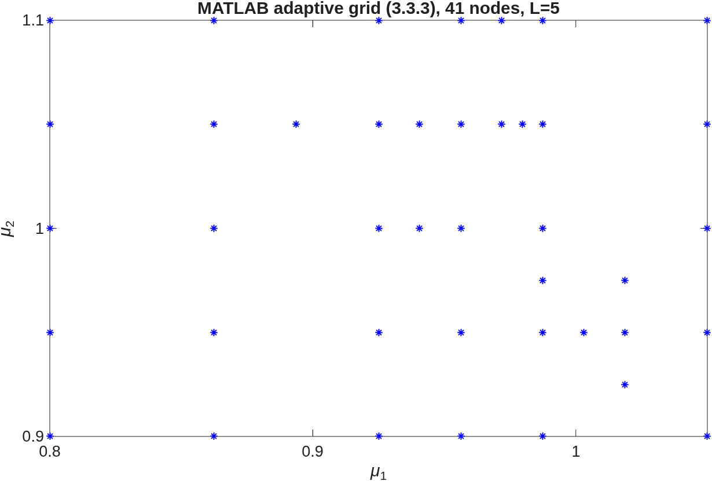
Both grids seed the same 3\times3 lattice, run the same node-centric forward_points refinement, and drive it into the same small-gap region. The remaining node-count gap (66 vs 41) is the projection/tolerance residual (Q11 — the publishing driver is missing from both MATLAB dumps), not an algorithm difference: the rebuild now uses the dissertation’s own refinement rule, so both fill the interior.
Separately from the forward_points figures above, DIR-103 ran a distinct bit-exact parity experiment against the frozen MATLAB run — deliberately using edge_bisection (plus squared Π and MATLAB’s exact mesh) to isolate the verdict pipeline from the spawn geometry. It measured how close the rebuild gets when the discretisation is made identical: RefinementConfig.dissertation_3_3_3_frozen_preset() (edge-bisection, squared Π, t_lambda=0.085, 5×5 seed) run via Diffusion2D.from_mesh(load_matlab_mesh(),…) on MATLAB’s exact P2 mesh reproduces the frozen run’s per-edge certify/refine verdict on 76/76 tested edges and 39 of 41 grid nodes with zero spurious. The 2 unreproduced nodes (µ_1\approx1.019) are node-centric n-vector forward spawns against a virtual point (empty space) that edge-bisection cannot place — a spawn-geometry difference, not a numeric or verdict gap. See the parity-ledger workflow, Q11, and DVG-SPAWN-01.
The 6-D elasticity example (§4.4) is not paired: its MATLAB run is the unbounded-memory path that OOMs on the available hardware (see the workspace OOM analysis), so a fresh MATLAB figure cannot be generated there. Rebuild-only figures on this page have no MATLAB counterpart.